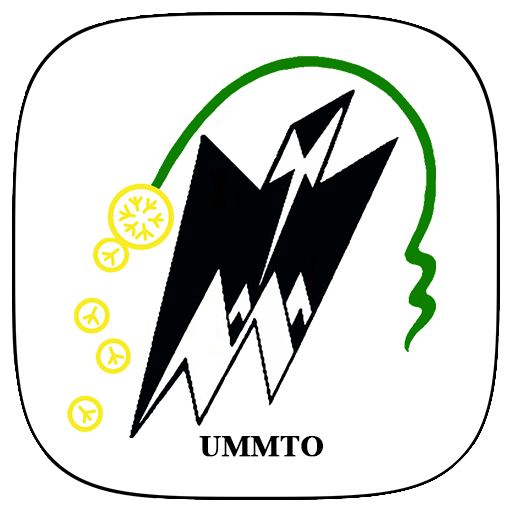

Mes Formations
Master Innovation et ingénierie en Images et Réseaux
Institut Galilé - Université Sorbonne Paris Nord (Depuis Septembre 2023)
- Protocoles Internet, Réseaux Virtuels, QOS
- Cloud, Développement réseau, Programmation Orientée Objet

Master Réseaux et Télécommunications
Université Mouloud Mammeri, Tizi Ouzou, Algérie (2019 - 2021)
- Conception de réseaux, Algorithmes de routage
- Virtualisation, Déploiement de solutions Cloud

Licence en Télécommunications
Université Mouloud Mammeri, Tizi Ouzou, Algérie (2016 - 2019)
- Réseaux de communication, Transmission de données
- Technologies sans fil et mobile
Baccalauréat en Sciences Expérimentales
Lycée Rabah Stambouli, Tizi Ouzou, Algérie (2013 - 2016)
Retour vers la page d'accueil